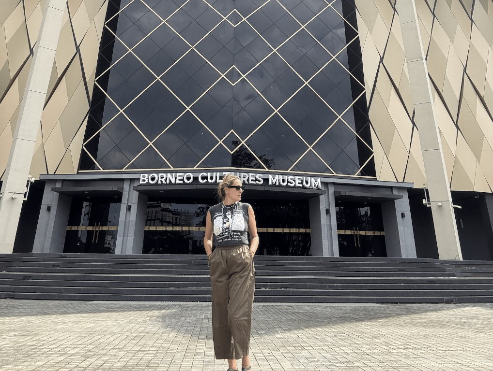
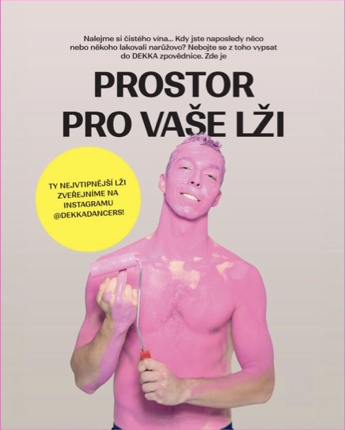
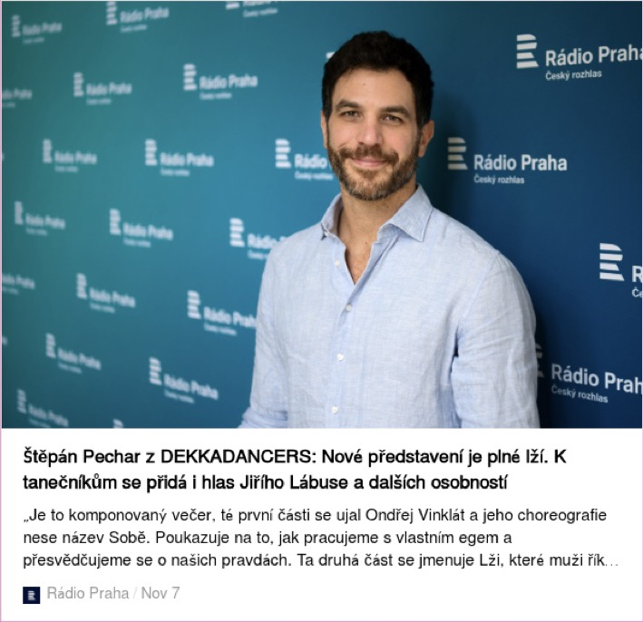
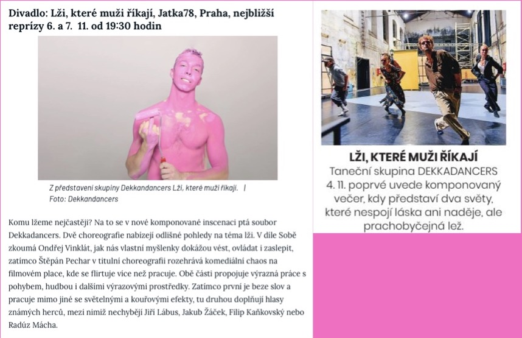
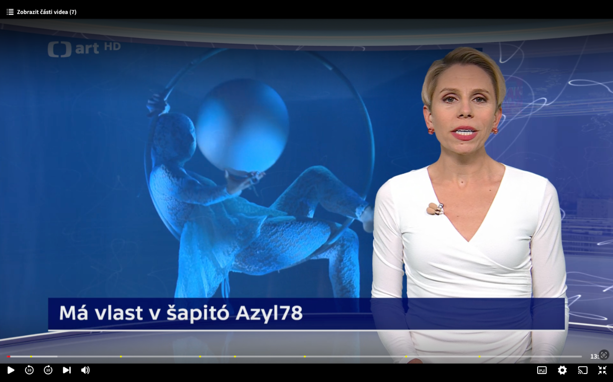
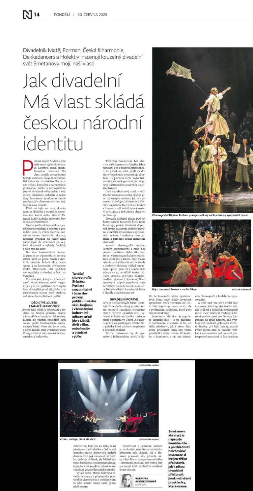
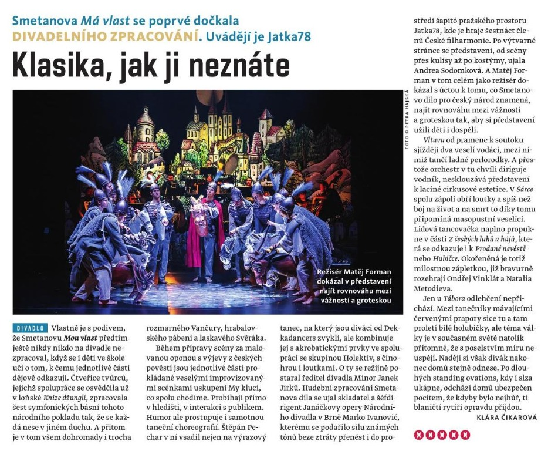

Let v médiích
Novinářský pohled na příběh.
Externí marketingové vedení na míru
Máte specialisty, ale chybí vám jasný směr? Prostředí kultury, médií a nezisku má svá specifika, která běžné agentury neznají. Vnesu do vašeho marketingu a PR strategii opřenou o 20 let praxe přímo z oboru. Sjednotím tým, nastavím procesy a pomůžu vám růst.
Pojďme posunout váš projektNezávislá CMO · Osobně zodpovědná za váš růst


Kultura · média · společenský dopad
Jmenuji se Zuzana Hošková. Celý můj profesní život je spojený s uměním, designem, architekturou a společensky odpovědným sektorem. Vystudovala jsem Dějiny a teorii designu a nových médií na UMPRUM. Kurátorka ani kunsthistorička se ze mě však nikdy nestala — více mě totiž bavilo tato témata popularizovat a hledat cesty, jak je dostat k veřejnosti. Sedm let jsem působila v médiích a psala o architektuře, designu, módě i postavení žen ve společnosti.
Naučila jsem se prosadit i složitá témata do masmédií, budovala kontakty v novinářské sféře a postupně zamířila do oblasti public relations. V roce 2013 jsem se stala tiskovou mluvčí České komory architektů, kde jsem popularizovala profesi architekta, prosazovala architektonické soutěže a bojovala za záchranu významných kulturních památek. Stála jsem rovněž u zrodu České ceny za architekturu.
Posledních 10 let působím na volné noze. Vedla jsem marketing a PR v divadle Jatka78, u tanečního souboru DEKKADANCERS, ve Fotograf Zone i na festivalu Prague Pride. V médiích jsem zviditelňovala větší i menší divadelní projekty, dále pak filmové a knižní počiny.
Baví mě být u zrodu nových projektů, ale i naskakovat do těch rozběhnutých, evaluovat je a posouvat dál. Zatímco v práci mám ráda jasný směr, strategii a cíl, ve volném čase je s radostí nechávám za sebou. V zimě mě tak nejčastěji potkáte na sólových cestách po jihovýchodní Asii — často zcela bez plánu a s malým batohem.
Můj přístup · Kapitola 02
Kultura, nezisk i menší značky mají vlastní rytmus. Umím se v něm pohybovat.
Zkušenosti, které se počítají
Zkušenosti z médií, PR a spolupráce s lidmi, kterým záleží na tom, co přinášejí světu.
Novinářský pohled na příběh.
Komunikace, kampaně, značky i krizové PR.
Za rok.
Kulturních akcí, které propaguji.
Za rok 2025.
Krátkodobé i dlouhodobé spolupráce.
Externí CMO · Strategie · Public relations
Zkratka CMO (Chief Marketing Officer) označuje člověka, který drží celkovou vizi a řídí marketingovou strategii. Jako externí CMO tuto roli přináším do malých firem, kulturních projektů a neziskových organizací, které nepotřebují nebo si nemohou dovolit marketingového ředitele na plný úvazek. Zároveň pomáhám odborníkům a lídrům najít jejich pozici, budovat důvěryhodnou osobní značku a získat smysluplnou mediální viditelnost díky promyšlenému PR.
Kultura, nezisk i menší značky mají vlastní rytmus. Umím se v něm pohybovat. Nebudu vám doporučovat nesmyslně velké rozpočty na kampaně ani placené nástroje, které dnes bez problému nahradí AI. Umím pracovat i s malými rozpočty, protože vím, že nejdůležitější je správná strategie, elegantní procesy a roky budované kontakty. Značky jsem budovala i s ročními marketingovými rozpočty v řádech nižších desítek tisíc korun. Nezahrnu vás hromadou marketingových pojmů a postupů, vyberu to, co bude fungovat přesně pro vás.
Značky tvoří příběhy. Pojďme napsat ten váš.
Nemáte rozpočet na člověka pro marketing a všechno leží na vašich bedrech? Se správným nasměrováním a určením priorit přestanete zbytečně pálit energii i peníze. Nebo máte social media manažera a online specialistu, ale chybí vám hlubší strategie? Do práce vašeho týmu vnesu ucelený pohled na vaši značku a odhalím slabá místa i dřímající potenciál.
Ve veřejném prostoru fungujete už nějakou dobu, ale cítíte, že chcete značku posunout? Topíte se ve spoustě agendy a nevíte, kde je zakopaný pes? Místo přijetí dalšího člověka do týmu se na chvíli společně zastavíme, rozebereme vaše silné i slabé stránky a řekneme si, proč některé procesy nefungují a jak nastavit kompetence v týmu.
Chystáte nový projekt a nevíte, kde s marketingem začít? Vymyslím kompletní strategii od focení vizuálu a přípravy traileru a videí přes nastavení správného tone of voice ve vašem copy až po doporučení pro obsah na sociálních sítích. Navrhnu komplexní harmonogram, aby na sebe jednotlivé kroky navazovaly a dávaly smysl.
Šlape vám marketing, ale chybí vám viditelnost v médiích? Navrhnu komplexní PR strategii, připravím text tiskové zprávy i neprůstřelný press kit a postarám se o jejich distribuci těm správným novinářům. Jako bývalá novinářka vím, jak uchopit i méně masové téma, jak ho zpracovat a komu ho nabídnout. Já zůstávám v pozadí, vy jste vidět.
Jste odborník, zakladatel nebo lídr s příběhem, který stojí za to sdílet? Pomohu vám najít jasné pozicování a klíčová sdělení, vytipovat zajímavá mediální témata a dlouhodobě budovat vaši viditelnost a reputaci. Připravím podklady pro média, propojím váš příběh se správnými novináři a připravím vás na mediální rozhovory.
Jste zástupcem komerční firmy a hledáte smysluplné spojení s kulturou, uměním nebo společensky prospěšnými projekty? Ozvěte se mi. Navrhuji partnerství a bartery na míru, které nekončí jen u loga na plakátu — mají skutečný přesah, přirozeně zapadnou do vaší komunikace a budou bavit obě strany i vaše publikum.
A výsledek?
Spolupráce · Kapitola 03
Pracuji jako nezávislá profesionálka s jasně daným rozsahem spolupráce a plným soustředěním na výsledek. Ať už jsem v Praze nebo na druhém konci světa, harmonogram a domluvené termíny pro mě zůstávají absolutní prioritou.
Pracuji jako nezávislá profesionálka, ne členka vašeho interního týmu. Znamená to jasně daný rozsah spolupráce, plné soustředění na výsledek a svobodu v tom, odkud a kdy svou práci odvádím. Ať už jsem zrovna v Praze nebo na druhém konci světa, harmonogram a domluvené termíny pro mě zůstávají absolutní prioritou.
Zastřešuji marketing komplexně. Vyznám se ve všech oblastech marketingu, protože je to nezbytné pro moji práci a ucelený pohled. Nepovažuji se ale za specialistku ve všech širokých marketingových disciplínách. Například neklikám PPC kampaně. Pomohu vám však zorientovat se v nich a zjistit, proč nefungují. Propojím vás s experty, kteří vás v oblasti PPC zaškolí nebo správu kampaní převezmou.
Určuji strategii sociálních sítí, nejsem ale jejich správkyně. Působím jako strategická partnerka vedle vašeho social media manažera — přináším nápady a podněty, řeším scénáře Reels a držím celkový směr.
Na úvodním setkání si řekneme vzájemnou představu a priority vašeho projektu.
Navrhnu konkrétní řešení a další kroky, odhadnu časovou dotaci a zašlu vám cenovou nabídku na míru.
Po odsouhlasení nabídky se s plnou energií pustíme do práce. U jednorázových auditů a projektových kampaní pracuji se zálohou 50 % předem. U dlouhodobé spolupráce v roli externí CMO funguji na bázi fixního měsíčního paušálu — vždy přesně víte, kolik do marketingu investujete, a máte garantovanou mou kapacitu i strategický dohled bez nepříjemných překvapení ve vyúčtování.
Vybrané projekty · Kapitola 03
Dva projekty. Každý s vlastním příběhem, publikem a komunikační výzvou.

Kompletní zastřešení marketingu a PR pro premiéru souboru DEKKADANCERS. Kampaň propojila výrazný růžový vizuál, sociální sítě, média i zapojení diváků přímo v divadle.




Public relations pro koprodukční projekt České filharmonie, Divadla bratří Formanů a DEKKADANCERS. PR provázelo zrod, přípravu i výsledek multižánrového projektu.




O spolupráci
Pracuji jako nezávislá profesionálka, ne členka vašeho interního týmu. Zastřešuji marketing komplexně, ale netvrdím, že jsem specialistka na všechny disciplíny. Určuji strategii sociálních sítí, nejsem ale jejich správkyně.
Důvěra se buduje spoluprací · Kapitola 05
Pár slov od lidí, se kterými jsem spolupracovala.
Vybrané značky, se kterými jsem spolupracovala
Kontakt · Poslední kapitola
Napište mi, na čem pracujete, co vás brzdí nebo co chcete zkusit. Společně najdeme další krok.